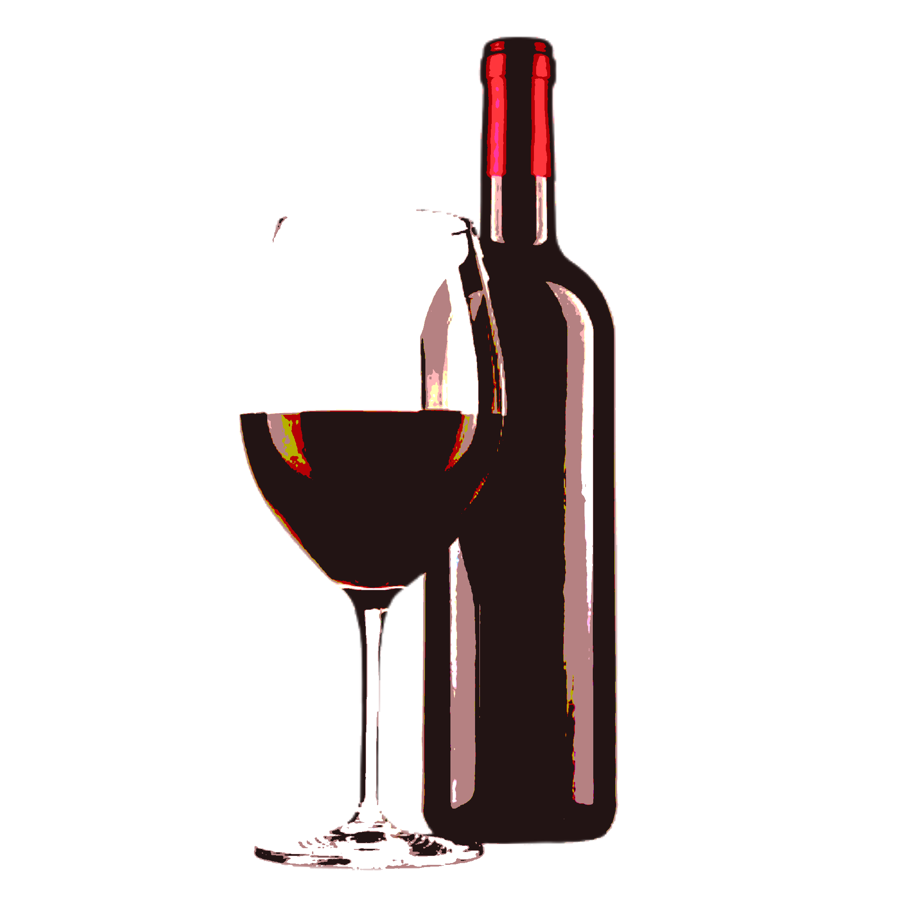

Red Wine is a product made from the juice of red grapes mixed with yeast and white sugar and left for about two weeks.
According to Flint, he made two red wines, one with red sugar, also known as aren,
and one with white sugar, also the most common sugar to be used in products
"A disappointment" is what Flint refers it.
This wine was created with the same procedure but with aren sugar. Flint expected much from it.
During the first week observation, the product shows signs of progress such as fermentation. But the next week, product failed fermentation.
After further study, it was discovered that aren sugar is not suitable for fermentation due to it's low energy thus unable to feed the yeast.